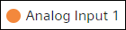
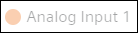
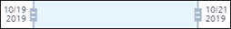

Additional Trends Procedures
This section provides additional procedures to work with Trends in Flex Client.
Display Trend Charts
- In System Browser, select Application View > Trends.
- All the trend view definitions, online trend log objects, or offline trend log objects display in the Trend tab in a tile view.
- Select a trend view definition, online trend log object, or an offline trend log object.
- The trend chart displays for the specified time interval.
NOTE: You can also view the data for the desired time range by navigating forward and backward on the trend chart using the mouse pointer.
Hide or Show a Trend Series
- Select a trend view definition, offline log object, or online log object from the System Browser.
- The trend chart displays.
- Do the following:
a. Select the name of the object
on the legend above the trend chart. The name of the object is grayed out
and the trend series no longer displays in the chart.
b. Select the name of the object a second time in order to show the series.
NOTE: If the trend chart contains any non-trended points, you can also show or hide the trend series corresponding to the non-trended points.
On switching to any other tab or event, if you want the trend chart to retain the visibility of its trend series when you switch back to the Trend tab, then ensure that you select the Save changes and leave option in the dialog box that displays when you navigate away from the Trend tab. The changes to the trend series are lost if you select the Discard changes and leave option in the dialog box.
Search or Filter Trend Objects
- In System Browser, select Application View > Trends.
- All the trend view definitions, online trend log objects, or offline trend log objects display in the Trend tab in a tile view.
- In the Search field, enter the name or description of the object that you want to search.
- The object with the matching name is filtered and displays from the list of objects.
Start and Pause Trend Data Display
- A trend chart displays the trend data corresponding to a selected trend view definition, offline trend log object, or online trend log object.
- To pause, select .
- To re-start, select .
NOTE: If trending is stopped in the management station for a trend view definition, it is retained in the Flex Client. On switching to any other tab or event, trend chart retains its last start or pause state when you switch back to the Trend tab.
Zoom Data
- A trend chart displays the trend data corresponding to a selected trend view definition, offline trend log object, or online trend log object.
- Do one of the following:
- In View mode, select Zoom .
- Select Edit . The trend data displays in Edit mode. Select and Zoom .
- Do one of the following:
- Position the mouse pointer at the point on the trend chart from where you want to zoom the data. Use the mouse wheel to zoom in and zoom out.
- Position the mouse pointer over the time bar and drag the sliders to the left or right depending on the time duration for which you want to view the data in the zoomed view.

- (For Touch Devices) Using your fingers, perform a pinch gesture to zoom in or zoom out to view the data in a zoomed view.
- The trend data for the specific time range displays at a granular level. Data of non-trended objects (if added) are also displayed.
NOTE: On switching to any other tab or event, if you want the trend chart to retain the visibility of its trend series when you switch back to the Trend tab. Select Save changes and leave when you navigate away from the Trend tab. The changes to the trend series are lost if you select the Discard changes and leave.
Exporting Trend Data
- In System Browser, select Application View > Trends.
- All the trend view definitions, online trend log objects, or offline trend log objects display in the Trend tab in a tile view.
- Select a trend view definition, online trend log object, or an offline trend log object.
- The trend chart displays for the specified time interval.
NOTE: You can also view the data for the desired time range by navigating forward and backward on the trend chart using the mouse poointer. - Select a time range to export the data.
- Click next to and select Export.
- The Export dialog box displays.
- Select any of the following file format:
- CSV
- Xlsx
- Select a specific sample density type to export the trend data. For more information, see Trend Export in Trend Workspace.
- Click Generate.
- The trend data exports in specified format and downloaded locally.